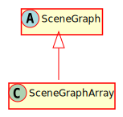

Hierarchy-Diagram
{kind=link}
Legend
 class
class
 abstract class
abstract class
Hierarchy
- SceneGraph
- SceneGraphArray
Index
Constructors
constructor
Creates a new SceneGraphArray
Parameters
Returns SceneGraphArray
Properties
Protected id
A counter of IDs for nodes in this SceneGraph
Private node
The list of CanvasNodes in this SceneGraph
Protected node
A map of CanvasNodes in this SceneGraph
Protected scene
A reference to the Scene this SceneGraph belongs to
Protected viewport
A reference to the viewport
Methods
add
Add a node to the SceneGraph
Parameters
node: CanvasNode
The CanvasNode to add to the SceneGraph
Returns number
The SceneGraph ID of this newly added CanvasNode
Protected add
An overridable method to add a CanvasNode to the specific data structure of the SceneGraph
Parameters
node: CanvasNode
id: number
Returns void
get
Returns all nodes in the SceneGraph
Returns CanvasNode[]
An Array containing all nodes in the SceneGraph
get
Get a specific node using its id
Parameters
id: number
The id of the CanvasNode to retrieve
Returns CanvasNode
The node with this ID
get
Returns the nodes at specific coordinates
Parameters
vecOrX: number | Vec2
The x-coordinate of the position, or the coordinates in a Vec2
y: number = null
The y-coordinate of the position
Returns CanvasNode[]
An array of nodes found at the position provided
get
The specific implementation of getting a node at certain coordinates
Parameters
x: number
y: number
Returns CanvasNode[]
get
Returns the nodes that overlap a specific boundary
Parameters
boundary: AABB
Returns CanvasNode[]
An array of nodes found overlapping the provided boundary
get
Gets the visible set of CanvasNodes based on the @reference[Viewport]
Returns CanvasNode[]
An array containing all visible nodes in the SceneGraph
remove
Removes a node from the SceneGraph
Parameters
node: CanvasNode
The node to remove
Returns void
Protected remove
The specific implementation of removing a node
Parameters
node: CanvasNode
id: number
Returns void
render
Parameters
ctx: CanvasRenderingContext2D
Returns void
update
Parameters
deltaT: number
Returns void
An implementation of a SceneGraph that simply stored CanvasNodes in an array.